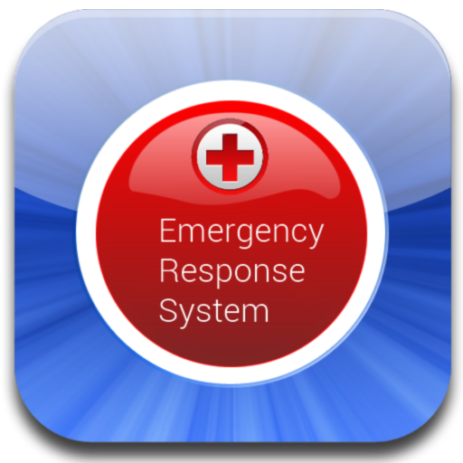

Getting started
How it works?
About
"EMERGENCY RESPONSE SYSTEM" A free application would help you manage your critical health record during emergency through your phone. Sends your latitude and longitude details along with your critical health record which your emergency contacts can securely access.

1. Download the application
To get started you need to download the app to your device. You can download it from here.
2. Verify account
You need to verify your phone number through the app. A passphrase would be generated for you and will be emailed to the emailID which is associated as your primary email id of your device. To complete this step you would require a valid e-mail account.
3. Configure account
Once your account is verified you can start selecting your emergency contacts. These are the contacts to whom your data would be sent in case of an emergency. You need to have atleast one emergency contact to actually use the SOS widget.
4. Setting up Medical Information
You have two sets of information can be specified. All the data is optional. Critical data are stored in your device and are explicitly sent via SMS during emergency. Emergency Medical Records which are stored online associated with your account is sent as a link during emergency. The receiver can access those information through internet using your phone number and unique token which would be sent to them during emergency.
5. Token generation
To sign into your online Emergency Medical Records account you need to use your passphrase and generate token from your device. The token changes every minute so you would have to regenerate everytime you sign in.
6. SOS Widget
Once you are done with all the above steps you are ready to use the application. You can use SOS or Emergency Response System through the Widget which is provided with the application. Create the widget to your home screen or any other screen and resize according to your comfort. From Android Jelly Bean the widget would be available even in lock screen.
7. Sending SOS Message
When you are faced with emergency you send SOS messages to your emergency contacts by taping on the widget and holding onto the panic button for few seconds(this is to avoid accidental press). An SMS containing your current location even if you don't have a data connection at that moment and along with your medical records, emergency medical records and token would be sent.
8. Regenerate Shared Key
Once you have sent your SOS message you can regenerate your shared key to start using your account and to create a new shared key which can be used for the next time when you meet with an emergency. But please note that once you regenerate a shared key the older token which was sent to your emergency contacts will no longer be valid.
Unlock Account
Your account gets locked if it anyone attempts to access it by entering incorrect information more than 9 times. This is an added security feature. You would be notified through an email that your account was locked. To unlock your account you need to refresh your account from the device using the options present in the configuration screen.
Getting back your passphrase
If you ever forget your passphrase you can either refresh your account to generate a new passphrase or you can resend it to your registered email id.